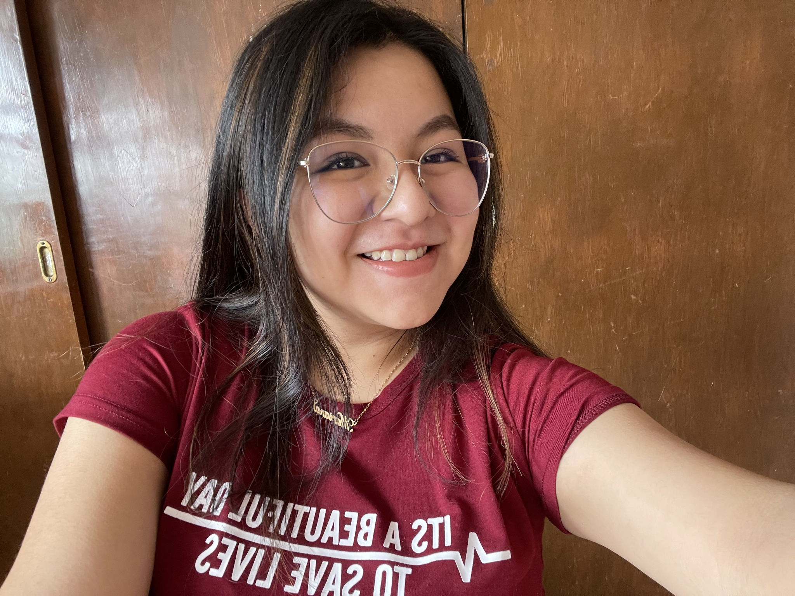

Mariana Ursuo Becerra
Crecí en la Xicotepec de Juaréz, tengo 21 años y estudio en la Benemérita Universidad Autónoma de Puebla en el colegio de diseño gráfico.
Mi colores favoritos son los pasteles, tengo dos perritos que me acompañan siempre, en el area del sieño me gusta mucho lo editorial, ilustració, el diseño gráfico me encanta porque nos permite solucionar distintos problemas a base de la creatividad.
Hay muchas cosas que me gustan como salir en bici, ver serie, estar con mi famila y amigos, el clima frio es mi favorito, y los frappes o cafes frios